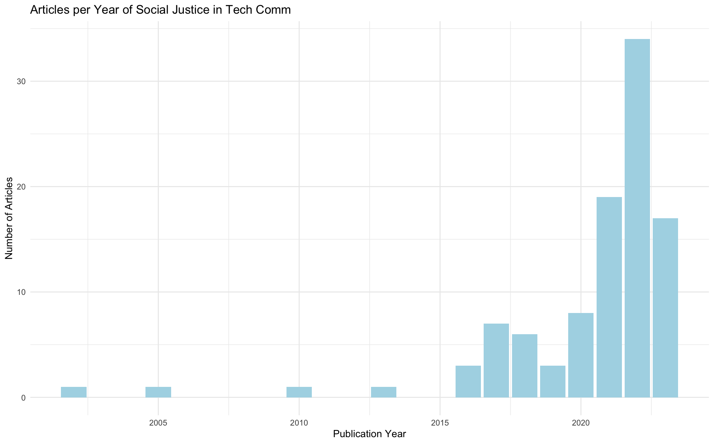
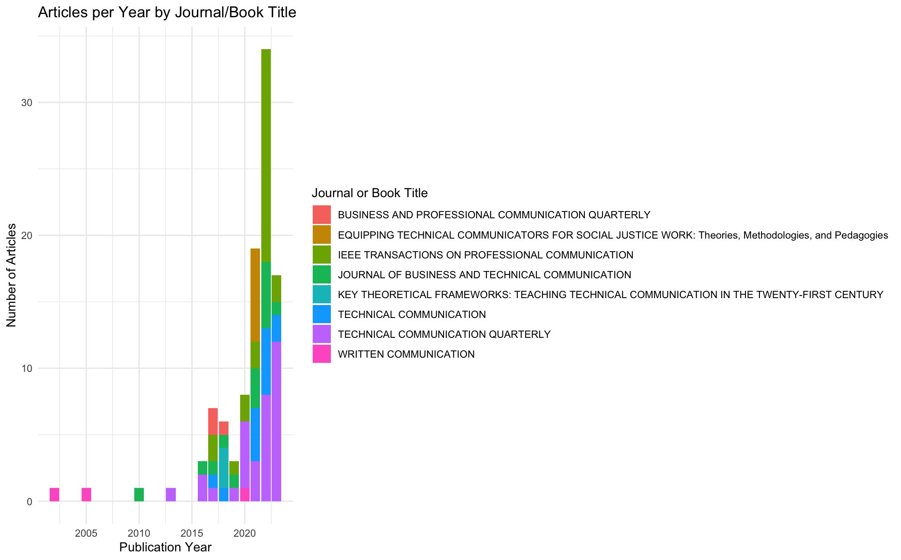
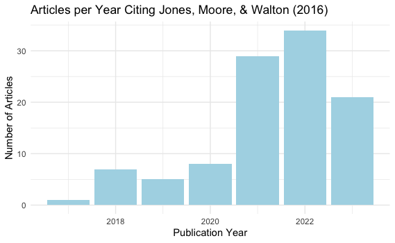
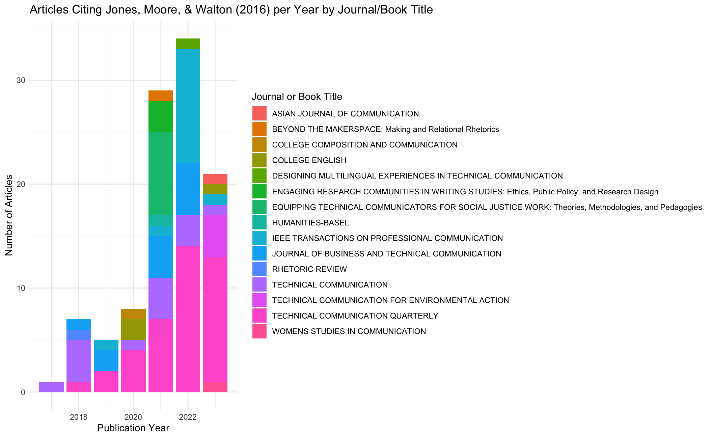

R Studio
Loading Libraries
I used the following libraries to clean my data and make some plots.
```{r}
library(tidyverse)
library(readr)
library(janitor)
library(dplyr)
library(ggplot2)
library(readr)
```Cleaning the data
This code formats all of the names in the same way (lowercase and replaces spaces with underscores) and keeps only the data columns I’m interested in.
```{r}
SJ_data_raw <- read_csv("SJ in Tech Comm.csv")
SJ_data_raw <- SJ_data_raw %>%
clean_names()
SJ_data_clean <- SJ_data_raw %>%
select(authors,
editors,
title,
source_title,
total_citations,
average_per_year,
publication_year)
```Initial Codes for Plots
I followed our Week 2 class demo to get these plots.
```{r}
# Count of articles per year
ggplot(SJ_data_clean, aes(x = publication_year)) +
geom_bar() +
labs(title = "Articles per Year of Social Justice in Tech Comm",
X = "Publication Year",
Y = "Number of Articles") +
theme_light()
# Count of articles per year by journal/book title
ggplot(SJ_data_clean, aes(x = publication_year, fill = source_title)) +
geom_bar() +
labs(title = "Articles per Year by Journal",
X = "Publication Year",
Y = "Number of Articles") +
theme_light()
```Initial Plots
The following plots include the information I wanted, but I wanted them to look nicer because the axis titles in Figures 1 and 2 and the index title in Figure 2 weren’t formatted properly.


Codes for Pretty Plots
I used the following code to make Figures 1 and 2 look better. You’ll notice minor changes in the code here, like using lowercase “x” and “y,” a different theme, the addition of the “light blue” color for the first graph, and the “fill” line for the second graph.
```{r}
# Count of Articles per Year
ggplot(SJ_data_clean, aes(x = publication_year)) +
geom_bar(fill="lightblue") +
labs(title = "Articles per Year of Social Justice in Tech Comm",
x = "Publication Year",
y = "Number of Articles") +
theme_minimal()
# Count of articles per Year by Journal/Book
ggplot(SJ_data_clean, aes(x = publication_year, fill = source_title)) +
geom_bar() +
labs(title = "Articles per Year by Journal/Book Title",
x = "Publication Year",
y = "Number of Articles",
fill = "Journal or Book Title") +
theme_minimal()
```Pretty Plots
These plots display the same information as Figures 1 and 2 but the formatting of Figures 3 and 4 looks better. I changed the theme of Figure 3, made the axis titles look better in both figures, and changed the index title in Figure 4. I spent a lot of time Googling and consulting others about how to fix these minor formatting issues.


Repeated Cleaning and Plotting for Second Data Set


The plots I created in R Studio don’t tie directly back to my research questions but they provide some helpful context for each of the data sets.